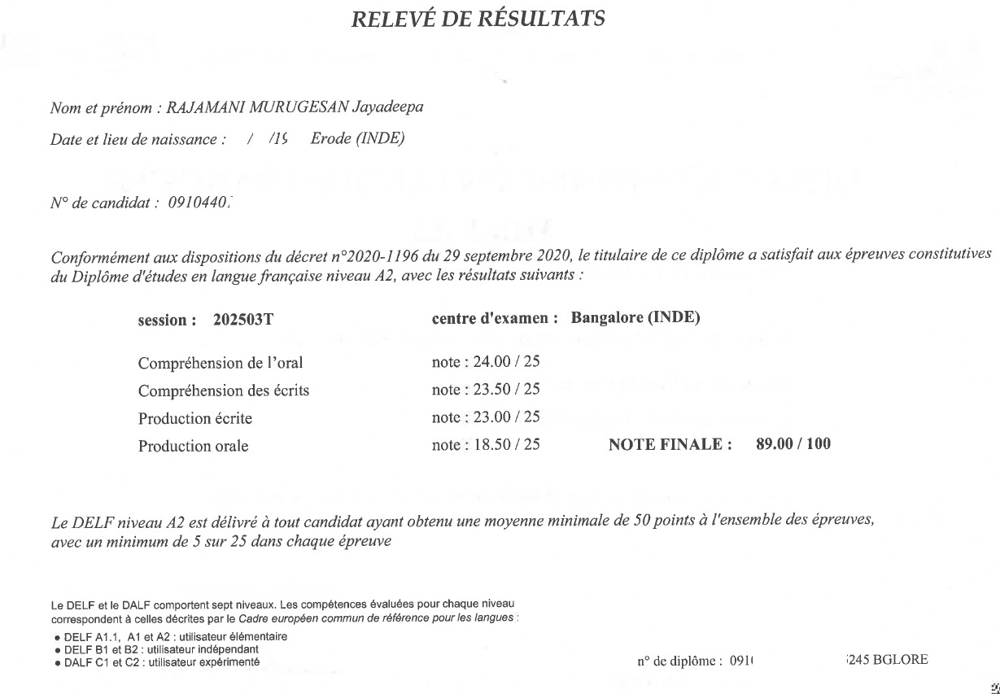
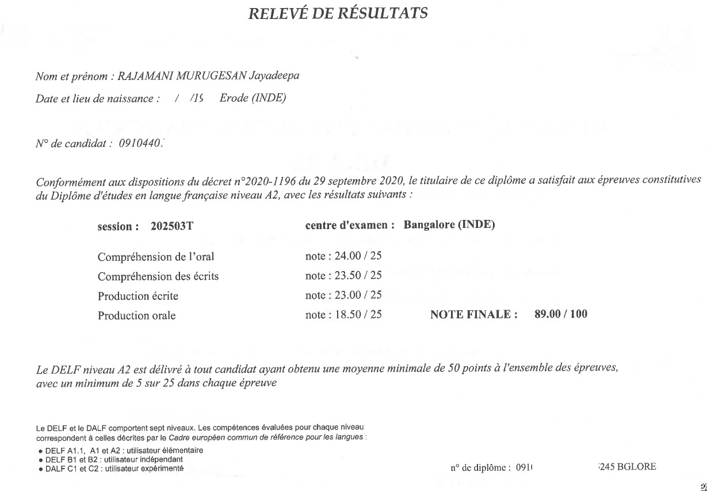
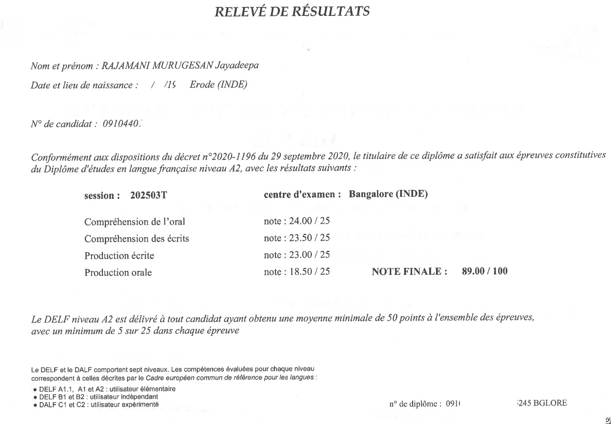

Certifications
Learning is never ending story and its interesting !
 

SAP MM | Supply Chain Enthusiast | Data Analyst | Francophonie | Speed Cuber | Mini Canvas Artist | Instrumentalist |
built by @jayadeepa1509
Learning is never ending story and its interesting !
